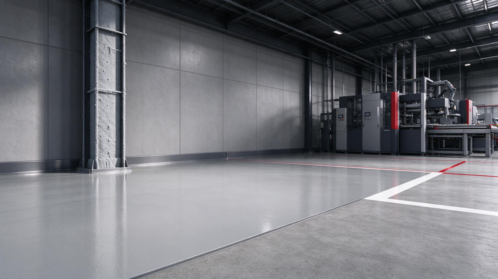
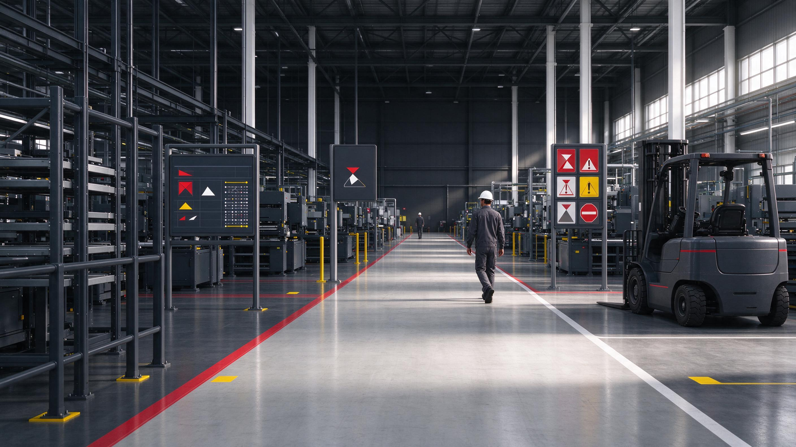
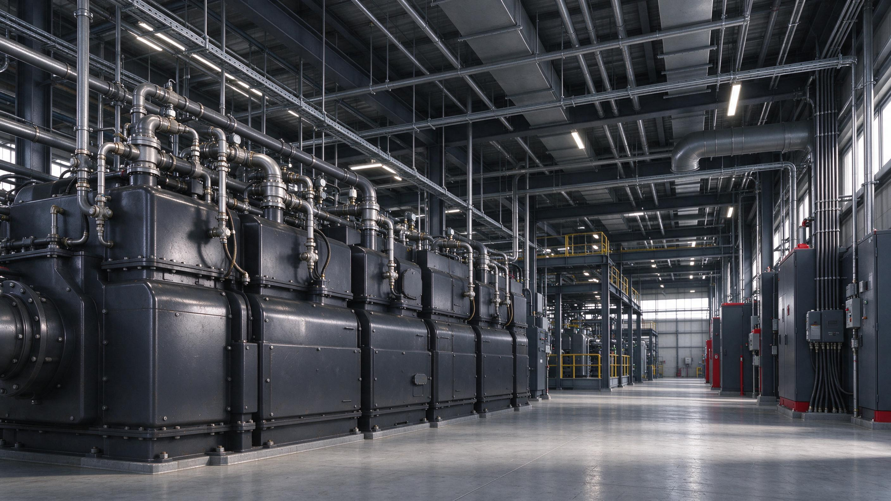
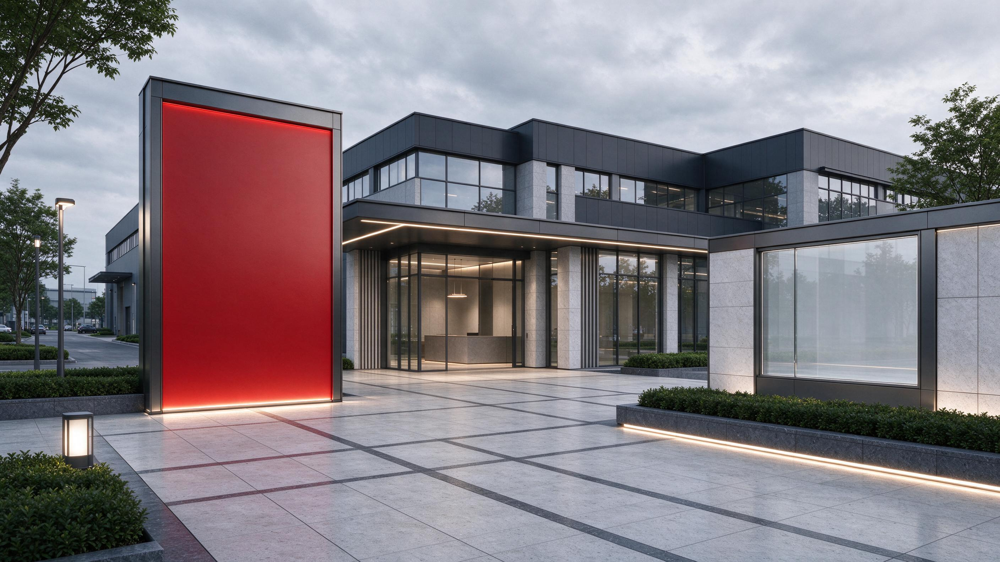
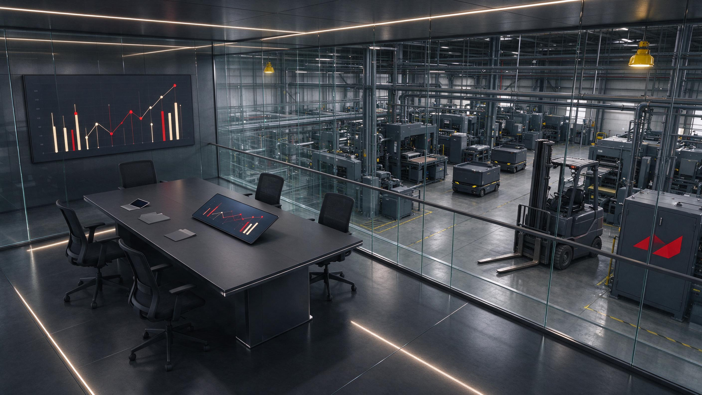
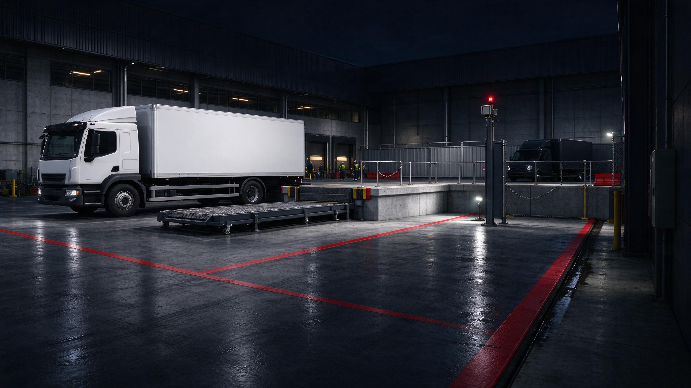

01 / 06
空间界面
让生产基础经得起使用
先检查基面、工况与使用强度，再确定材料和做法；不是用一种涂料覆盖所有现场。
- 服务内容
- 地坪系统、墙面与天花、屋面、钢构防护
- 相关参考
- 物流仓与工业园项目


先检查基面、工况与使用强度，再确定材料和做法；不是用一种涂料覆盖所有现场。


专业团队实施，红涂统一接口、进度与验收；土建、承重结构、消防工程本体与电力设备本体不在范围内。


把企业已有的管理信息放到正确的位置；数字界面与管理机制按实际需求设计，不承诺未经验证的经营指标。

每天明确进场、清场与恢复条件；写进合同的承诺配套检查方法，具体维保范围以合同为准。

把生产放在施工之前考虑
确认基面、工况、施工区域与不能被打断的生产条件。
明确范围、材料、每日窗口、恢复条件与验收方式。
按现场条件组织夜间施工，具体时段以方案和合同为准。
清理施工区域，按约定恢复条件，不把问题留给白班。
13 项检查逐条打钩，5 年维保写进合同，一个责任主体跟进。
范围透明，责任不转包
自有班组直接负责
统一接口、进度与验收
交付方案、标准与图纸
按合同周期与频次到场
土建、承重结构、消防工程本体（不含消防标识）、电力、设备本体。界面之外透明说明，不介入报价。